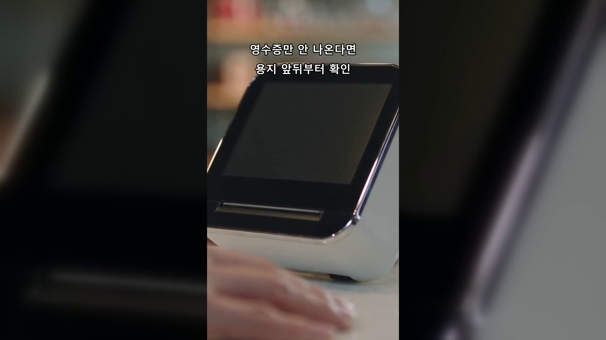
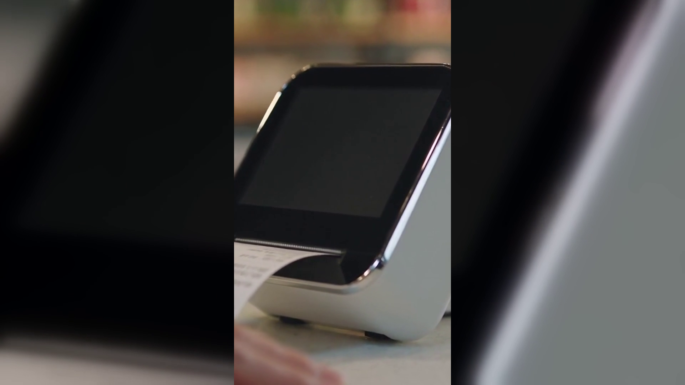

[제목]
영수증용지, 카운터에서 영수증이 안 나올 때 볼 6곳 — 네이버단말기
[본문]
승인은 정상으로 떨어졌는데 영수증만 안 나옵니다. 손님은 카운터 앞에 서 있고 프린터는 빈 소리만 내며 돌아가니, 그 자리에서 검색창을 여신 사장님이 적지 않으실 겁니다. 오늘은 A/S를 부르기 전에 카운터에서 직접 볼 순서를 정리했습니다.
결론부터 말씀드리면, 영수증이 안 나오는 원인은 대부분 영수증용지의 앞뒤 방향과 프린터 커버 체결에서 갈립니다.
- 용지를 한 번 뒤집어 넣어 봅니다
감열지는 한쪽 면에만 인쇄됩니다. 방향이 반대면 기계는 멀쩡히 돌아가는데 백지만 밀려 나옵니다. 롤을 빼서 반대로 끼우는 것만으로 끝나는 경우가 가장 많습니다.
- 인쇄면은 손톱으로 찾습니다
용지 끝을 손톱으로 세게 긁어 검은 선이 남는 쪽이 인쇄면입니다. 그 면이 헤드 쪽을 향하게 넣으시면 됩니다. 기종마다 위아래가 다르니 한 번 확인해 두면 됩니다.
- 커버가 소리 날 때까지 닫혔는지 봅니다
한쪽 모서리만 걸리면 종이가 비뚤게 밀리거나 인쇄가 중간에 멈춥니다. 양쪽을 같이 눌러 딸깍 소리가 나는지 확인하시고, 용지 끝은 커버 밖으로 조금 빼 둡니다.
- 롤 끝에 색 띠가 보이면 교체 신호입니다
감열 롤은 대부분 끝부분에 붉은 띠가 인쇄돼 있습니다. 띠가 보이면 남은 길이가 얼마 없다는 뜻이니, 피크 시간 전에 미리 갈아 두세요.
- 용지 규격이 기기와 맞는지 확인합니다
폭이나 심지 굵기가 다르면 롤이 헛돌거나 걸려서 출력이 끊깁니다. 쓰던 롤 규격을 설명서와 맞춰 보시고, 다음 주문부터 같은 규격으로 받으세요.
- 글씨가 흐리면 헤드를 닦아 봅니다
전원을 끄고 커버를 연 뒤, 마른 면봉으로 용지가 닿는 가느다란 선을 가볍게 훑습니다. 물이나 세정제는 쓰지 않습니다. 감열지를 직사광선이나 열기 옆에 두지 않는 것도 도움이 됩니다.

위 3번과 5번이 반복되는 매장이라면 프린터가 본체에 붙은 일체형 쪽이 손이 덜 갑니다. 네이버단말기는 용지함 구조가 단순해 교체가 한 동작으로 끝나는 편입니다. 정품 신제품 보증 · 수도권 직영 설치를 원칙으로, 쓰시는 기종에 맞는 용지 규격부터 확인해 드립니다.
영수증이 안 나오는 날이 곧 기기가 고장 난 날은 아닙니다. 용지 방향과 커버부터 보시고, 예비 롤 하나는 카운터 서랍에 늘 두세요. 같은 증상이 반복되면 편하게 연락 주세요.
- 📞 전화상담 1544-7754
- 🌐 홈페이지 https://nwpos.co.kr

📷 인스타그램 팔로우 https://www.instagram.com/nurinetworkspos

▶️ 유튜브 구독 https://www.youtube.com/@nurinetworks
(2026년 8월 기준)
15초 3채널 공용 = 「영수증이 안 나올 때 / 용지 앞뒤부터 확인」
본문 ③ 끝(6번 항목 아래)에 16:9 임베드. 9:16 동일 소재로 유튜브 쇼츠·인스타 릴스 공용.
컷 구성 3컷 = ①빈 영수증지를 들여다보는 카운터 ②용지 롤을 뒤집어 끼우고 커버를 닫는 손 ③단말기 클로즈업(영수증이 밀려 나옴)
[대표이미지]
- 이미지1-매장(썸네일 겸용, 3채널 공용): 초저녁 동네 카페 카운터, 백지로 나온 영수증지를 빛에 비춰 보는 30대 사장님. 뒤로 손님 한 명 대기. 단말기 화면 완전 공백.
썸네일 텍스트(후반 ffmpeg 합성) = 「용지 앞뒤부터」
- 이미지2-제품: 정돈된 카운터 위 네이버단말기 제품 컷, 프린터 슬롯에서 영수증지가 밀려 나오는 순간. 화면 완전 공백.